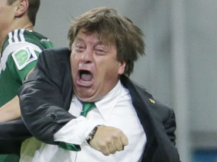
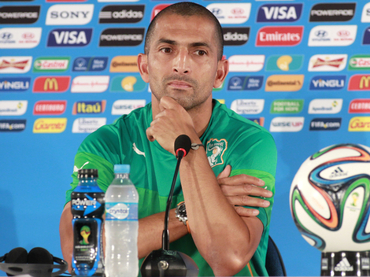
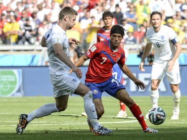

| Lista de Equipos | Calendario y Resultados | Tabla de Grupos |
|---|---|---|
| Goleo Indvidual | Goleo por Equipos | Estadísticas |
| Noticias | Captura de Resultados | Registrar Equipo |
| Registrar Jugador | ||
| La euforia del 'Piojo', en la prensa internacional | Lamouchi anuncia que no renovará con Costa de Marfil | Colombia-Uruguay y Costa Rica-Grecia se agregan a 'octavos' |
|---|---|---|
|  |  |  |
| Diarios como The Guardian y ABC News han introducido imágenes del festejo del DT del Tri. | El técnico menciona que su fin con los Leones se debe a los decepcionantes resultados obtenidos. | Un duelo sudamericano queda confirmado para los octavos de final del Mundial Brasil 2014. |